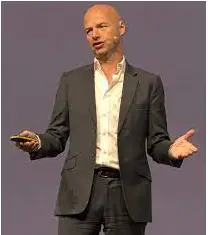

Machine Learning Experts You Should Be Following Online
Last updated on November 29, 2021
One of the most fast evolving domains in today's tech savvy world is Machine Learning and
Deep Learning. An area expected to continue its vast growth and development also in the coming
years. Getting ourselves up-to-date with the latest on the advancement in technologies, the
trending news, industry patterns, and opinions of compelling figures can appear to be
overpowering.
But one prime approach to remain educated is through Twitter, which has finally proved to be an
useful and engaging approach to remain circled into the insights of a portion of the top
personalities and spearheading scholars in AI, who utilize their records to voice their feelings on
the most recent news and industry rehearses.
If you are someone interested to learn about the latest developments in this field, gain important
perspectives from the best brains and be future proof, then there cannot be a better way other
than following these Machine Learning experts and their successful journey. Beginners like me
have been highly inspired by these heroes of machine learning and can continue to look up to
their research work every day to explore more with their algorithms to increase our knowledge.
To kick you off, I have incorporated a summary of top 10 machine learning experts, profound
learning influencers and specialists whom you ought to follow online. This rundown is a blend of
business leaders, originators, specialists, entrepreneurs, scientists and columnists, every one of
whom welcome a kind interpretation of AI to the table.
1. ANDREW NG #
The most famous name in the book of AI enthusiast, Andrew Yan-Tak Ng is considered as the
most prominent mind in the domain of Machine Learning and Deep Learning in the present time.
The co-founder and chairman of Coursera and deeplearning.ai, is a british-born American
technology entrepreneur. He is presently mentoring in the department of Computer Science as an
Adjunct Professor at Stanford University.
Educator Andrew was the head and helped to establish the Google Brain project and has already
worked as the Chief Scientist at Baidu. He is happily married to fellow AI influencer Carol
Reiley.
His point is to democratize profound learning and give everybody on the planet admittance to top
notch schooling without any cost, the advantage we receive from Coursera. His online seminars
on AI and profound learning are exceptionally pursued by many students and professionals all
around the world. An extraordinary history of a scholarly analyst is what Andrew holds in this
field. He has more than 300 research papers published in the field of machine learning and
advanced mechanics. He is a beneficiary of esteemed honors like ICML Best Paper Award,
IJCAI Computers and Thought grant, ACL Best Paper Award and many more to fill the list.
2. MICHAEL I JORDAN #
Michael I Jordan, one of the most influential figures of the ML world, is presently working as a
Professor at UC Berkeley, and was a former Professor at MIT. His instructions, which are quite
similar to his examination advantages, are divided among Statistics and EECS. Statistics,
artificial intelligence, and deep learning are the areas that attract him most to explore with.
Back in the 1980s, Jordan began creating recurrent neural networks as an intellectual model.
Lately, his work is less determined from a psychological viewpoint and more from the
foundation of conventional measurements. He assisted his work with advocating the utilization
of Bayesian organizations in AI applications, and is frequently credited as one of the guideline
scholars who brought the cover among measurements and AI to well known consideration. He is
an individual of ACM, ISBA, CSS, AAAI, ASA, IEEE, IMS and SIAM. His alumni and postdoc
understudies have also gone on to significantly impact the universe of ML, a few of whom show
up on this rundown Andrew Ng, David Blei and Zoubin Ghahramani. He recently completed an
enlightening Reddit AMA. Moreover, he has also been honored by the Institute of Mathematical
Statistics with the title of Medallion Lecturer and Neyman Lecturer.
Statistics, the subfield of mathematics, is such a subject which plays a dominant role in every
step of Machine Learning and to add to your knowledge, let me tell you a huge number of
Statisticians are present who did really unexceptional experiments in this field. Machine
Learning deals with building different algorithms, systems, and models that learn from structured
data with the help of statistics, instead of normal programming instructions. Statistics has
ultimately proved itself to be the biggest game changer in the growth of a business in this 21st
century. A broad topic to be understood in depth on how the process of Statistical Analysis
actually works for Machine Learning on business case scenarios. To help you out learn more,
check out the blog on Statistical Analysis.
3. KIRILL EREMENKO #
The organizer and CEO of SuperDataScience, an online instructive gateway for Data Scientists,
Kirill Eremenko is a well-known data science entrepreneur whose central goal is to simplify
complex problems with the vision of turning into the greatest learning entrance for Data Science
fans.
Additionally, the online portal highlights many investigation courses going from apparatus based
courses, for example, Python, R Programming, Tableau to complete tutorials for Machine
Learning A-Z and prologue to Data Science. Some of his best course structure education by
Kirill includes Deep Learning, a detailed guide from A-Z and the Hands-On Artificial Neural
Networks. He is also a Udemy Instructor holding the best reviews among all.
This was my first openness to profound learning and trust me, their course is genuinely stand-out
with incredible accentuation on the instinctual level of comprehension with involved coding
instructional exercises on Supervised and Unsupervised Deep Learning. What's more, as of late,
I got the opportunity to peruse his book , Confident Data Skills that assists the readers with
understanding the total information science work process from start till the finish of ventures, all
with zero level of coding.
4. SEBASTIAN THRUN #
Another exceptionally famous name on our rundown, Sebastian Thrun is presently the CEO of
Kitty Hawk Corporation and the Co-founder of the widely used online course platform, Udacity.
Sebastian is an entrepreneur from Germany who established the Google X Lab and Google’s
self-driving group. He drove the task from the beginning and is broadly viewed as a pioneer with
regards to self-sufficient vehicles. Google’s self-driving car project is presently headed by him.
He has fostered various self-governing mechanical frameworks in his profession.
His understanding of AI is that people won’t get replaced by the applications of AI but rather it
would add to our capabilities.

He is well-experienced in the teaching profession too as he is working as the Adjunct Professor
at both Stanford University and Georgia Tech. He is profoundly incorporated into the scholastic
side of machine learning also, as we would anticipate from an individual of Sebastian’s height.
The Popular Science magazine named him as Brilliant 5 back in 2005. He has additionally been
granted the Max-Planck-Research Award in 2011.
5. ANDREAS KRETZ #
At whatever point we talk about information science, the vast majority will in general think that
it's tied in with building cool AI models and making great expectations. In all actuality, building
models is only a piece of the entire work process and information designing (otherwise known as
handyman of information science) is the urgent piece of this work process that upholds
information science projects. Without a steady and strong information designing pipeline and
stage, it'll be a difficult opportunity to try and get information to play out any examination at the primary spot.
Andreas is genuinely a specialist on his own with regards to information designing and
developing large information stages to help information science projects.
He is a data engineer and information science stage designer, building information science stages
that cycle and investigate crazy measures of information consistently. He is an information
designing evangelist situated in Germany, who consistently shares information designing
instruments, methods, and abilities regularly through live recordings that cover themes like the
broadness of occupation alternatives in information science to ongoing Apache Spark coding
meetings.
6. TERRY SEJNOWSKI #
The most popular teacher at the University of California, San Diego, belonging to the Biological
Sciences department as well as the Francis Crick Professor at the Salk Institute. He is also an
Investigator at the Howard Hughes Medical Institute, and one of the pioneers of Neural
Networks. His spearheading commitments to the field of AI incorporate his co-creation of
Boltzmann machines with Geoffrey Hinton.
On account of his work in demonstrating and figuring mind function, he is one of just ten living
researchers to have been chosen for every one of the three public foundations (Medicine, Science
and Engineering) from back in the 1980's. He is presently a counsel to Obama’s $100 million
BRAIN drive, which grows new instruments for planning neural circuits. Terry is known to the
world as the creator of the calculation for Independent Component Analysis that has been
broadly utilized in AI and sign preparation. He is the recipient of the Hebb Prize by the
International Neural Network Society in 1999 for his dedication and commitments to learning
calculations. Indeed, in the year 2002 he was also awarded IEEE’s Neural Network Pioneer
Award. In 2017, he was chosen for the National Academy of Inventors.
7. GEOFFREY HINTON #
It’s unbelievably difficult to summarize the profession of any of these phenomenal personalities
in a couple of sentences, however with Hinton, this demonstrates especially testing. Thirty years
prior, Hinton was at that point positively shaping profound learning, co-creating Boltzmann
machines, backpropagation, and contrastive uniqueness. However, it wasn't until the registering
power figured out how proportional to satisfy the needs of profound discovery that Hinton really
started to get the more extensive acknowledgment outside of the scholarly community he
merited.
In 2004, he helped to establish Neural Computation and Adaptive Perception, a handpicked,
welcome just gathering of specialists from across the fields of physical science, neuroscience and
designing. He additionally established DNNResearch, which was procured by Google a year ago.
From that point forward, he's been dealing with the purported Google "Cerebrum" neural organization venture, and serving to significantly improve Google's picture
acknowledgment and Android's sound acknowledgment abilities.
8. ZOUBIN GHAHRAMANI #
A prominent Professor and researcher of Information Engineering at Cambridge University,
Ghahramani is an distinguished individual belonging to the Adjunct Faculty at the Gatsby
Computational Neuroscience Unit at UCL. He has added to the fields of Bayesian ways to deal
with Artificial Intelligence, man-made reasoning, insights, data recovery, bioinformatics, and
computational engine control. He completed his doctorate from the University of Massachusetts
Institute of Technology at the Department of Brain and Cognitive Sciences , under the
supervision of Tomaso Poggio and Michael I. Jordan.
He started a startup in the year 2014 named as Geometric Intelligence that focuses on item or
situation acknowledgment. In the later years, Uber started implementing Geometric Intelligence
and he finally joined Uber's A.I. Labs in 2016. Publishing more than 250 research papers in the
domain of Machine Learning, he was chosen Fellow of the Royal Society (FRS) in the year
2015.
He was as of late granted $750,000 by Google for The Automatic Statistician, a task driven by
Ghahramani which investigates an open-finished space of conceivable factual models to find a
decent clarification of the information, and afterward creates an itemized report with figures and
normal language text.
9. YANN LECUN #
A French computer scientist working mostly in the field of mobile robotics, computer vision,
machine learning, Yann LeCun and his amigos concocted the convolutional neural networks that
make picture acknowledgment work. In his professional life, Yann holds the position of Director
of AI Research at Facebook.
Yann centers around AI and its applications, including vision, discourse, language, information
mining, and bioinformatics. Likewise, Yann considers PC vision, portable advanced mechanics,
and computational neuroscience.
On following him on Twitter for 45-minute narratives on profound gains from Radio Canada in
French, he says these are astonishing, yet he has his own questions. There are many intriguing
articles about the eventual fate of assembling, for example, that are written in English. Yet,
there's a great deal of French.
10. JAMES CHAM #
I believe that from our viewpoint, the messy mystery around AI right now is that no one
understands what they are doing. James Cham keeps it genuine.
James Cham is a Partner at speculation firm Bloomberg Beta and a beginning phase VC fixated
on the new universe of work. He works really hard scattering a few fantasies about AI and
furthermore collapsing a portion of the publicity.
One can cherish his point about how everybody is centered around the central issues like what
will machine learning mean for the fate of work, yet nobody is zeroing in on the bare essential
execution stuff, which is the thing that's needed for AI to affect the fate of work. It's very much an objective of my blog to help fill in those holes and clarify how organizations can really utilize ML in the present time and place to improve their organizations.
Another extraordinary point he made on the Too Embarrassed to Ask digital recording is that the
second that we sort something out, it simply turns into another element. Sorting out some way to
toast bread was outrageously troublesome, Cham said. Also, individuals discussed a robot that
would really sort out precisely how to get bread perfectly. Also, the second it's feasible, it's a toaster oven, and I imagine that is valid about a great deal of innovation. He doesn't compose or Tweet a ton however when he gives a meeting, it merits your time.
Author Bio #
Senior Data Scientist and Alumnus of IIM- C (Indian Institute of Management - Kolkata) with over 25 years of professional experience Specialized in Data Science, Artificial Intelligence, and Machine
Learning. PMP Certified ITIL Expert certified APMG, PEOPLECERT and EXIN Accredited Trainer for all modules of ITIL till Expert Trained over 3000+ professionals across the globe Currently authoring a book on ITIL "ITIL MADE EASY".
Conducted myriad Project management and ITIL Process consulting engagements in various organizations. Performed maturity assessment, gap analysis and Project management process definition and end to end implementation of Project management best practices Social Profile Links.
Twitter account URL- https://twitter.com/ramtavva?s=09
Facebook Profile URL- https://www.facebook.com/ram.tavva
Linked In Profile URL https://www.linkedin.com/in/ram-tavva/
Load Comments